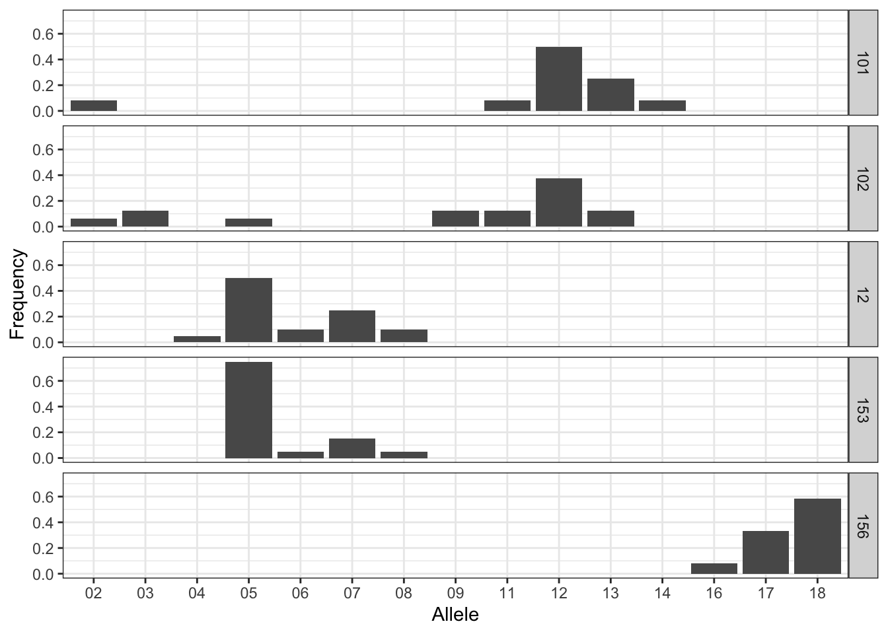

devtools::install_github("dyerlab/popgraph")
devtools::install_github("dyerlab/gstudio")The gstudio package has routines that can be used to simulate random populations. I’ve added these to facilitate more exploratory data analysis. Here is how you can use them.
If you have not updated the gstudio and popgraph packages in a while, you probably should. Here is how (if it asks if you would like to update the other packages, it is probably a good idea to say yes).
Then load it in as:
library(gstudio)I’m going to start with the enigmatic bark beetle data set.
data(arapat)
summary(arapat) Species Cluster Population ID Latitude
Cape : 75 CBP-C :150 32 : 19 101_10A: 1 Min. :23.08
Mainland : 36 NBP-C : 84 75 : 11 101_1A : 1 1st Qu.:24.59
Peninsula:252 SBP-C : 18 Const : 11 101_2A : 1 Median :26.25
SCBP-A: 75 12 : 10 101_3A : 1 Mean :26.25
SON-B : 36 153 : 10 101_4A : 1 3rd Qu.:27.53
157 : 10 101_5A : 1 Max. :29.33
(Other):292 (Other):357
Longitude LTRS WNT EN EF
Min. :-114.3 01:01 :147 03:03 :108 01:01 :225 01:01 :219
1st Qu.:-113.0 01:02 : 86 01:01 : 82 01:02 : 52 01:02 : 52
Median :-111.5 02:02 :130 01:03 : 77 02:02 : 38 02:02 : 90
Mean :-111.7 02:02 : 62 03:03 : 22 NA's : 2
3rd Qu.:-110.5 03:04 : 8 01:03 : 7
Max. :-109.1 (Other): 15 (Other): 16
NA's : 11 NA's : 3
ZMP AML ATPS MP20
01:01 : 46 08:08 : 51 05:05 :155 05:07 : 64
01:02 : 51 07:07 : 42 03:03 : 69 07:07 : 53
02:02 :233 07:08 : 42 09:09 : 66 18:18 : 52
NA's : 33 04:04 : 41 02:02 : 30 05:05 : 48
07:09 : 22 07:09 : 14 05:06 : 22
(Other):142 08:08 : 9 (Other):119
NA's : 23 (Other): 20 NA's : 5 To simulate random data sets we need to start off by determining what allele frequencies you may want. I’m going to use the stratum-level frequencies from the example data set. Here is what these look like.
suppressPackageStartupMessages( library(tidyverse) )
library(DT)
freqs <- frequencies(arapat, stratum="Population")
head(freqs) Stratum Locus Allele Frequency
1 101 LTRS 01 0.2777778
2 101 LTRS 02 0.7222222
3 101 WNT 01 1.0000000
4 101 EN 01 0.6111111
5 101 EN 03 0.3888889
6 101 EF 01 0.7142857though the whole data set has 700 rows!
What I’m going to do is to create a random dataset from these frequencides. This dataset will have 20 populations (I’ll just grab the first 20 Stratum from this frequency matrix).
freqs %>%
filter( Stratum %in% unique(freqs$Stratum)[1:20] ) -> sim_freqs
summary(sim_freqs) Stratum Locus Allele Frequency
Length:370 Length:370 Length:370 Min. :0.0500
Class :character Class :character Class :character 1st Qu.:0.1500
Mode :character Mode :character Mode :character Median :0.3500
Mean :0.4297
3rd Qu.:0.7000
Max. :1.0000 And we can take a quick look at the frequencies across populations for, say MP20 as:
sim_freqs %>%
filter( Locus == "MP20", Stratum %in% unique(Stratum)[1:5] ) %>%
ggplot( aes(Allele,Frequency)) +
geom_bar( stat="identity", position="dodge" ) +
facet_grid( Stratum ~ .) +
theme_bw()
OK. Now, lets take a look at how we can make a random population. The make_population() function takes a frequency matrix and creates random individuals. Here is an example.
fake101 <- make_population( sim_freqs %>% filter(Stratum=="101"), N=100 )
head(fake101) Population ID AML ATPS EF EN LTRS MP20 WNT ZMP
1 101 1 08:08 04:09 01:01 01:03 01:02 13:13 01:01 01:01
2 101 2 08:11 09:09 01:01 01:03 01:02 12:12 01:01 01:01
3 101 3 08:08 02:02 01:02 01:01 01:02 13:13 01:01 01:01
4 101 4 11:11 04:09 01:02 01:03 02:02 11:12 01:01 01:01
5 101 5 11:11 02:04 01:02 01:03 01:02 12:12 01:01 01:01
6 101 6 08:11 02:02 01:01 01:01 01:02 12:14 01:01 01:01The frequencies should be pretty close to the real ones. Compare the LTRS locus allele frequencies from the simualted data
frequencies( fake101,loci = "LTRS") Locus Allele Frequency
1 LTRS 01 0.28
2 LTRS 02 0.72and the real data
sim_freqs %>% filter(Locus=="LTRS", Stratum=="101") Stratum Locus Allele Frequency
1 101 LTRS 01 0.2777778
2 101 LTRS 02 0.7222222Pretty close. So using this approach, we can make all kinds of allele random populations. You just need to figure out the allele frequency matrix and then pass that to the appropriate functions.